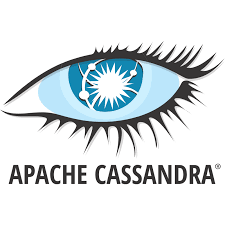
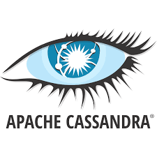

Compétences

 



Excel | Power BI | Python | SQL | GitHub
★ Collecte & ETL (SQL - SSIS - APIs)
★ Analyse statistique et exploratoire (pandas - seaborn)
★ Préparation & Transformation (pandas - PySpark)
★ Visualisation interactive et Dashboards (Power BI - Qlik Sense)
★ Stockage & Data Warehouse (MySQL - Cassandra - PowtgreSQL)
★ Automatisation et Workflows (scripts Python)